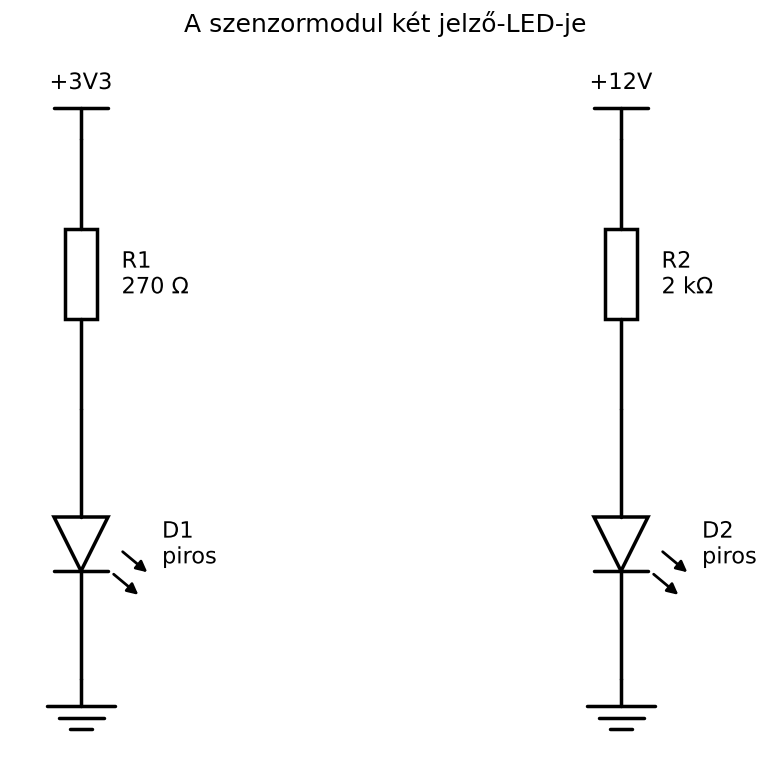
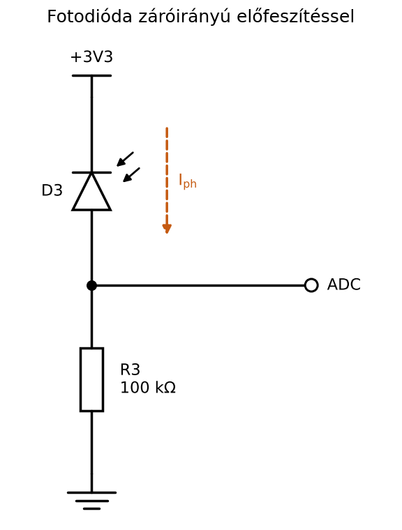
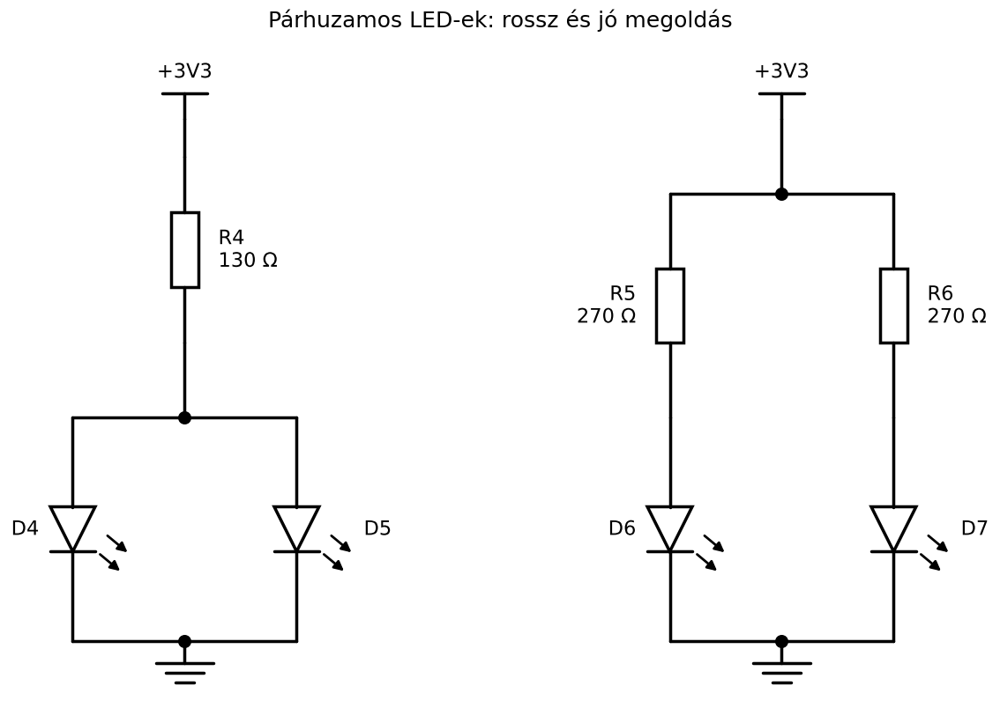

Három különleges dióda következik: az egyik letörésben dolgozik, a másik világít, a harmadik fényt érzékel. A végére (1) méretezni tudsz egy Zener-diódás stabilizátort, és ismered a korlátait; (2) a LED előtét-ellenállását a tűrésekkel együtt, szabványos értékből választod ki; (3) meg tudod magyarázni, miért az áram határozza meg a LED fényét, és mikor kell áramgenerátoros meghajtás.
A szenzormodulon két jelző-LED van: egy tápjelző közvetlenül a 12 V-os bemeneten, és egy állapotjelző a mikrovezérlő 3,3 V-os lábán. Ha valaki egy kék LED-re cseréli a pirosat, a 3,3 V-os LED hol erősen, hol alig világít, példányonként másképp. Egy segédáramkörnek néhány milliampernyi, nagyjából 5 V-os táplálás kellene a 9–16 V-os bemenetről, a legegyszerűbben. Végül a modul egy változata a környezeti fényt is méri. Mindhárom feladatra egy-egy dióda a válasz, de mindegyik más viselkedését használja. Alapok: A pn-átmenet és a dióda karakterisztikája és a szabványos értékek (E-sorok, tűrés és jelölések).
A Zener-diódát (Zener diode) úgy tervezik, hogy záróirányban egy pontosan meghatározott feszültségen, a Zener-feszültségen () törjön le, és ott tartósan üzemelhessen. Letörésben az áram nagyon meredeken változik a feszültséggel, tehát a feszültség széles áramtartományban alig változik. Ezért söntstabilizátorként használjuk: egy ellenállás korlátozza az áramot, a Zener pedig a fölös áramot elvezeti, és a kimenetet körül tartja. Rajzjele a diódajel, hajlított végű katódvonallal; a rajzon a katód van a magasabb potenciálon, fordítva, mint egy vezető diódánál.
Gondolkodj előre: az ábrán 5 mA terheléssel a kimenet 9 V bemenetnél 5,03 V. Mit vársz 16 V-nál: pontosan ugyanezt, vagy többet? És mi történik, ha a terhelés 10 mA-re nő 9 V-on?
16 V-on a kimenet kb. 5,50 V: a Zener-árammal együtt a feszültség is nő. 10 mA terhelésnél 9 V-on már nem marad elég áram a Zenernek, és a kimenet kiesik: a stabilizálás megszűnik, a feszültség a terhelés szerint esik.
A LED (light-emitting diode, fénykibocsátó dióda) olyan pn-átmenet, amelyben a rekombináló elektronok és lyukak energiája fény formájában szabadul fel. A fény mennyisége közelítőleg arányos az árammal. A szín az anyagtól függ, és vele együtt a nyitófeszültség is: a rövidebb hullámhosszú (kék) fényhez nagyobb feszültség tartozik. A fehér LED rendszerint kék LED fényporos bevonattal.
Mivel a LED is exponenciális karakterisztikájú dióda, egy kis feszültségváltozás nagy áramváltozást okoz. A LED-et ezért árammal hajtjuk meg: vagy egy előtét-ellenállás, vagy áramgenerátor szabja meg az áramot.

A fotodióda (photodiode) a LED fordítottja: a beeső fény a kiürített rétegben töltéshordozó-párokat kelt, amelyeket a belső tér szétválaszt. Eredménye a fénnyel arányos fotóáram (), amely záróirányban folyik (a katódon be, az anódon ki). Jó közelítéssel a fotodióda fénnyel vezérelt áramforrás.

Két fizikai mechanizmus okoz letörést. Kis (kb. 5 V alatti) feszültségen a Zener-hatás (alagúthatás) dominál, hőfoktényezője negatív; nagyobb feszültségen a lavinahatás (a gyorsított hordozók újabbakat ütnek ki), hőfoktényezője pozitív. Kb. 5–6 V körül a kettő nagyjából kioltja egymást, ezért az ilyen Zenerek a leginkább hőstabilak. A köznyelv mindkettőt Zener-diódának nevezi.
Definíció. Az adatlap az értéket egy megadott mérőáramnál adja meg, a differenciális ellenállás ezen pont körül. A kisfeszültségű Zenerek „könyöke” lágy (nagy , már alatt is folyik áram), a 6–7 V körülieké éles.
Az ellenállás árama , és a Zeneré . A Zener csak akkor stabilizál, ha legalább árama marad. A legnehezebb helyzet a legkisebb bemenet és legnagyobb terhelés:
A képlet szavakban: az ellenálláson akkora áramnak kell átjutnia, hogy a terhelés legnagyobb áramán felül a Zenernek is jusson. A legnagyobb disszipáció viszont a legnagyobb bemenetnél és a legkisebb terhelésnél lép fel:
A kimenet kis változásai a differenciális ellenállással becsülhetők (az változása egy – osztón jut ki, a terhelőáramé az eredőn):
A korlátok: a stabilizálás pontatlan (a tűrés, a hőfokfüggés és miatt), a hatásfok rossz (a Zener mindig elvezeti a fölösleget), és csak kis terhelőáramra jó. Pontos feszültséghez referencia vagy lineáris szabályzó kell.
Zener mint egyszerű védelem. Egy soros ellenállás és egy Zener a föld felé a jelet körül határolja (negatív irányban a nyitóág V körül). Gyors, nagy energiájú tüskékre a TVS-dióda való (ESD- és túlfeszültség-védelem az áramkörben). Figyelj: a lágy könyökű Zener már alatt is szivárog, és a mérőjelet torzíthatja.
Továbbvitt eredmény. A Zener-stabilizátor és korlátai a Teljesítménymérleg, lineáris szabályzó és LDO és a DAC, PWM, feszültségreferenciák és ratiometrikus mérés alfejezet kiindulópontja.
Dimenzió: V/A = Ω. A képlet a feszültség „maradékát” adja az ellenállásnak. A nyitófeszültség adatlapfüggő; a könyv mintaadatai 5 mA körül: piros 2,0 V, sárga 2,1 V, zöld 2,2 V (más anyagú zöld LED-ek 3 V körül is lehetnek), kék és fehér 2,9 V, infravörös 1,25 V 20 mA-en.
Az áram tűrése annál érzékenyebb, minél kisebb az ellenálláson eső feszültség. A legrosszabb eset:
Itt a tápfeszültség. Ökölszabály: ha az ellenálláson legalább a tápfeszültség harmada, de legalább 1 V esik, az előtét általában elég pontos; ha csak néhány tized volt, áramgenerátoros meghajtás kell. Ugyanez a helyzet nagy teljesítményű LED-nél, erősen ingadozó tápnál vagy ha a fényerő pontossága fontos; erre kész LED-meghajtó IC-k és tranzisztoros áramforrások valók (A BJT működése, tartományai és munkapontja után).
Párhuzamos LED-ek közös ellenálláson csapdát jelentenek. Ha két piros LED nyitófeszültsége csak 0,1 V-tal tér el, és közös 130 Ω-os ellenállásról táplálod őket 3,3 V-ról, az áram nem feleződik: a kisebb feszültségű LED kb. 7,6 mA-t, a másik 2,4 mA-t kap (a kódban kiszámoljuk). Ráadásul a melegebb LED nyitófeszültsége csökken, így még több áramot vesz fel. Minden párhuzamos ághoz saját ellenállás kell. Sorba kötött LED-ek árama ezzel szemben azonos, ha a tápfeszültség elég a feszültségeik összegéhez.

PWM-fényerő. A PWM (pulse-width modulation, impulzusszélesség-moduláció) a LED-et gyorsan ki-be kapcsolja. A bekapcsolt idő aránya a kitöltési tényező ; a szem az átlagot látja, ezért a fényerő kb. -vel arányos, az átlagáram . 5 mA-es bekapcsolási árammal és -vel az átlag 1 mA. A frekvenciát néhány száz hertz fölé célszerű tenni, hogy ne villogjon láthatóan. A LED színe így nem változik, mert bekapcsolva mindig ugyanazon az áramon üzemel.
Továbbvitt eredmény. A LED-előtét méretezése a Mikrovezérlő GPIO illesztése terhelésekhez és az 1. záróprojekt: védett tápegység 12 V-ról 5 V-ra és 3,3 V-ra része.
A fotóáram , ahol a megvilágítás (lux), az érzékenység (a példában nA/lx, mintaadat). Sötétben is folyik egy kis sötétáram (dark current), amely melegben erősen nő (mintaadat: 2 nA 25 °C-on, 10 K-enként duplázva).
A fenti kapcsolásban 1000 lx-nél µA és V; telítés kb. 3300 lx-nél, ahol az ellenállás a teljes 3,3 V-ot „elveszi”. A sebességet szabja meg: 100 kΩ és pF (mintaadat) mellett 2 µs. Nagyobb érzékenyebb, de lassabb és érzékenyebb a sötétáramra.
Továbbvitt eredmény. A fotodióda mint áramforrás a transzimpedancia-erősítő bemenete lesz (Alapkapcsolások: invertáló, neminvertáló, összegző, különbség- és műszererősítő).
Cél: kb. 5 V, 0–5 mA terhelés. : 5,1 V-os Zener ( V 5 mA-en, , mintaadat), mA.
Józanész-ellenőrzés: ez „kb. 5 V” (a szimuláció szerint 5,03–5,63 V), nem pontos tápfeszültség, és a hatásfok 12 V-on, 5 mA-nél csak kb. 15 %.
Piros LED a 3,3 V-os lábról, 5 mA: , E24-ből 270 Ω, mA. Legrosszabb eset (táp ±3 %, = 1,8–2,2 V, ellenállás ±1 %): mA, mA. Ez rendben van.
A 12 V-os tápjelzőn 2 kΩ: mA; 9 és 16 V között 3,4–7,2 mA. A legnagyobb disszipáció W: 0603-as tokra (mintaadat: 0,1 W) ez túl sok, a tartalékos választás 1206 (0,25 W), vagy két sorba kötött 1 kΩ-os 0805.
import sys; sys.path.insert(0, "code")
from elkit import devices as dv, nonlinear as nl, units
z = dv.ZENERS["5V1"]
for u_be in (9.0, 12.0, 16.0):
for i_t in (0.0, 5e-3, 10e-3):
r = dv.zener_regulator(u_be, 470.0, i_t, z, i_z_min=2e-3)
print(f"U_be={u_be:4.1f} V I_t={1000 * i_t:4.1f} mA U_ki={r.u_out:.2f} V "
f"I_Z={1000 * r.i_z:5.1f} mA P_Z={1000 * r.p_z:4.0f} mW "
f"{'ok' if r.regulating else 'KIESIK'}")U_be= 9.0 V I_t= 0.0 mA U_ki=5.21 V I_Z= 8.1 mA P_Z= 42 mW ok
U_be= 9.0 V I_t= 5.0 mA U_ki=5.03 V I_Z= 3.4 mA P_Z= 17 mW ok
U_be= 9.0 V I_t=10.0 mA U_ki=4.30 V I_Z= 0.0 mA P_Z= 0 mW KIESIK
U_be=12.0 V I_t= 0.0 mA U_ki=5.40 V I_Z= 14.0 mA P_Z= 76 mW ok
U_be=12.0 V I_t= 5.0 mA U_ki=5.25 V I_Z= 9.4 mA P_Z= 49 mW ok
U_be=12.0 V I_t=10.0 mA U_ki=5.09 V I_Z= 4.7 mA P_Z= 24 mW ok
U_be=16.0 V I_t= 0.0 mA U_ki=5.63 V I_Z= 22.1 mA P_Z= 124 mW ok
U_be=16.0 V I_t= 5.0 mA U_ki=5.50 V I_Z= 17.3 mA P_Z= 95 mW ok
U_be=16.0 V I_t=10.0 mA U_ki=5.36 V I_Z= 12.6 mA P_Z= 68 mW okA LED-előtét-kalkulátor az led_design függvény: E24-es
értéket választ, és a legrosszabb esetet is megadja. A párhuzamos példa
LED-modellje az elkit.devices LED-jeihez hasonlóan
és
.
Ez eltér a Nemlineáris elemek és a munkapont
LED-mintamodelljétől
():
ott a 2,0 V, 5 mA körüli munkapontban a differenciális ellenállás kb.
10,8 Ω, itt a soros ellenállás miatt kb. 18,6 Ω.
esetek = (("piros 3,3 V", 3.3, 2.0, (1.8, 2.2), 0.03),
("kék 3,3 V", 3.3, 2.9, (2.6, 3.2), 0.03),
("kék 5 V", 5.0, 2.9, (2.6, 3.2), 0.03))
for nev, u, u_f, tart, tol in esetek:
d = dv.led_design(u, u_f, 5e-3, "E24", u_supply_tol=tol, u_f_range=tart, r_tol=0.01)
print(f"{nev:12s} R = {units.fmt(d.r, 'Ω'):6s} I = {1000 * d.i_nom:.2f} mA "
f"({1000 * d.i_min:.2f} … {1000 * d.i_max:.2f} mA)")
d1 = dv.Diode.from_point(1.95, 5e-3, n=2.0, r_s=8.0)
d2 = dv.Diode.from_point(2.05, 5e-3, n=2.0, r_s=8.0)
c = nl.NonlinearCircuit()
c.add_vsource("U1", "in", "0", 3.3).add_resistor("R4", "in", "a", 130.0)
c.add_diode("D4", "a", "0", d1).add_diode("D5", "a", "0", d2)
s = c.solve()
print(f"közös ellenállás: D4 {1000 * s.i('D4'):.1f} mA, D5 {1000 * s.i('D5'):.1f} mA")
for nev, d in (("D6", d1), ("D7", d2)):
op = nl.operating_point(3.3, 270.0, d)
print(f"saját ellenállás: {nev} {1000 * op.i:.1f} mA")piros 3,3 V R = 270 Ω I = 4.81 mA (3.67 … 5.98 mA)
kék 3,3 V R = 82 Ω I = 4.88 mA (0.01 … 9.84 mA)
kék 5 V R = 430 Ω I = 4.88 mA (3.80 … 5.99 mA)
közös ellenállás: D4 7.6 mA, D5 2.4 mA
saját ellenállás: D6 5.0 mA
saját ellenállás: D7 4.7 mAA 3,3 V-os kék LED árama a legrosszabb esetben gyakorlatilag nulla vagy a duplája: az ellenállásos meghajtás itt nem tervezhető.
A Zener-dióda záróirányú letörésben közel állandó feszültséget tart; söntstabilizátorként az -t a legkisebb bemenet és legnagyobb terhelés (), a disszipációt a legnagyobb bemenet és legkisebb terhelés szerint számoljuk. Pontatlan és pazarló, kis árama való. A LED fényét az áram adja; , a tűréseket legrosszabb esetre ellenőrizve. Kis feszültségmaradéknál áramgenerátor kell, párhuzamos LED-ekhez ágankénti ellenállás; a fényerő PWM-mel állítható. A fotodióda fénnyel vezérelt áramforrás: fotovoltaikus módban logaritmikus, záróirányú előfeszítéssel lineáris és gyorsabb. Ezekre épül a szabályzó, a GPIO-illesztés és a transzimpedancia-erősítő.
1. feladat. , E24: 360 Ω. mA, mW.
2. feladat. mA.
3. feladat. , E12: 270 Ω. Legnagyobb bemenet, terhelés nélkül: mA, W; W (a Zener feszültségének emelkedését elhanyagolva).
4. feladat. 10000 lx → µA. kΩ, E12: 22 kΩ (2,2 V). A sötétáram 60 °C-on nA, ez lx-nek felel meg, függetlenül -től; gyenge fényben ez már számít.
5. feladat.
from elkit import eseries
def led_ellenallas(u, u_tol=0.03, uf=(1.8, 2.2), r_tol=0.01, i_max=7e-3):
r_min = (u * (1 + u_tol) - uf[0]) / (i_max * (1 - r_tol))
r = eseries.nearest(r_min, "E24", "up")
i_lo = (u * (1 - u_tol) - uf[1]) / (r * (1 + r_tol))
i_hi = (u * (1 + u_tol) - uf[0]) / (r * (1 - r_tol))
return r_min, r, i_lo, i_hi
for u in (3.3, 5.0):
r_min, r, i_lo, i_hi = led_ellenallas(u)
print(f"{u} V: R_min = {r_min:.0f} Ω -> {units.fmt(r, 'Ω')}, "
f"I = {1000 * i_lo:.2f} … {1000 * i_hi:.2f} mA")3.3 V: R_min = 231 Ω -> 240 Ω, I = 4.13 … 6.73 mA
5.0 V: R_min = 483 Ω -> 510 Ω, I = 5.14 … 6.63 mAAz 5 V-os esetben az áram szűkebb sávban marad: nagyobb az ellenálláson eső feszültség.